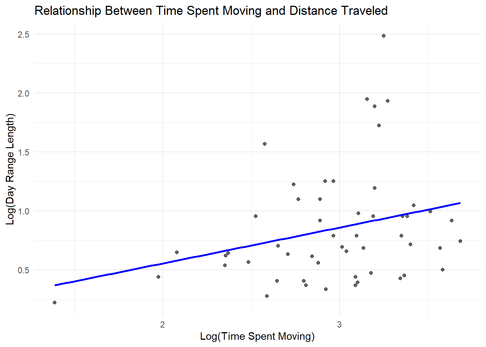
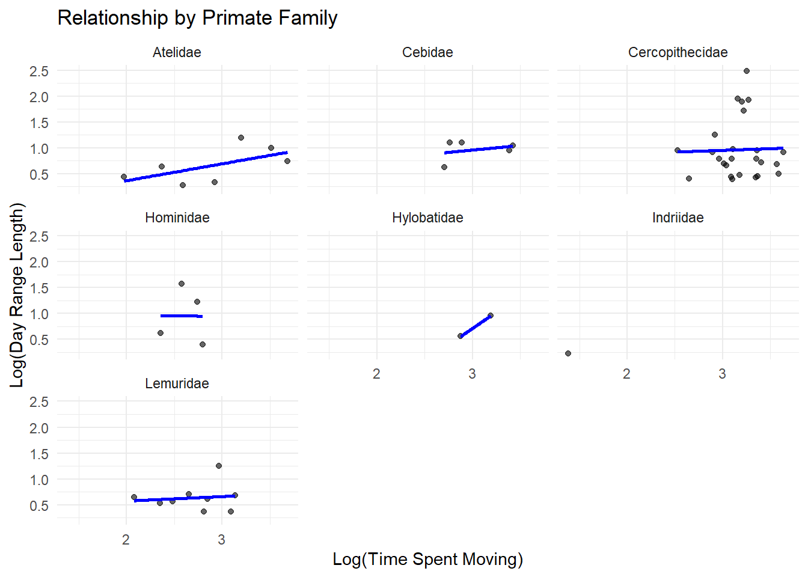
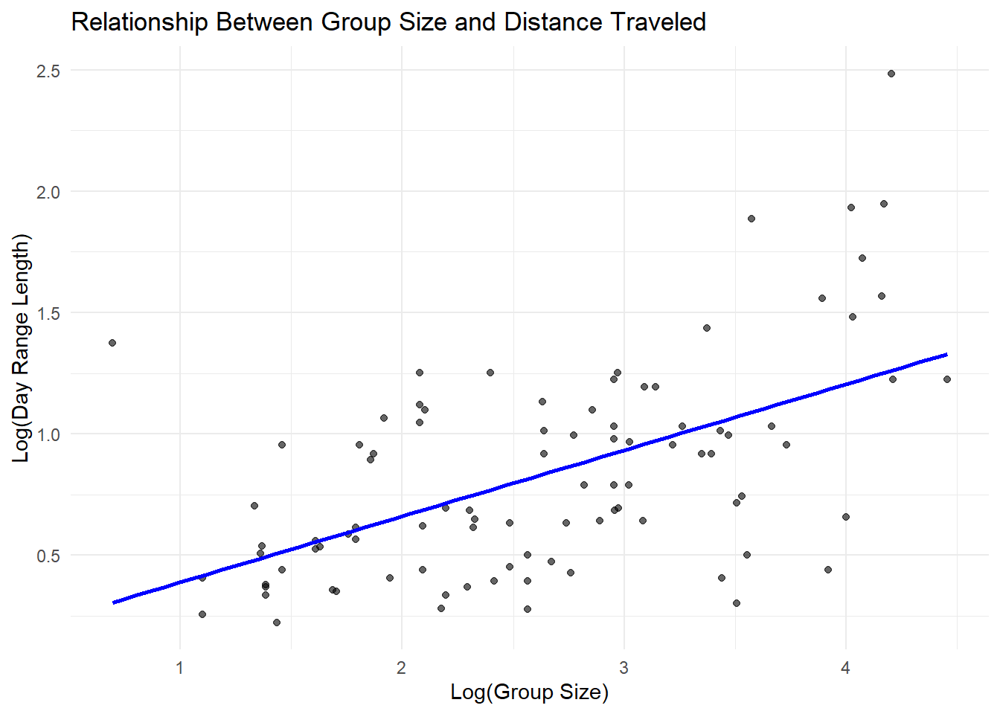
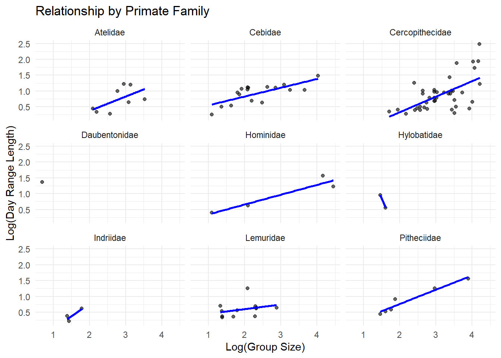
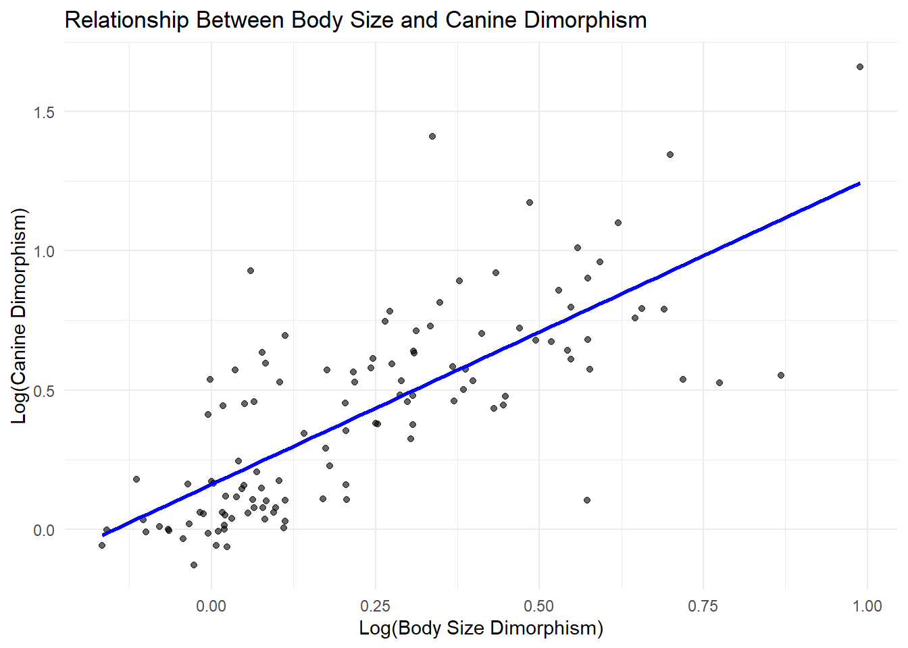
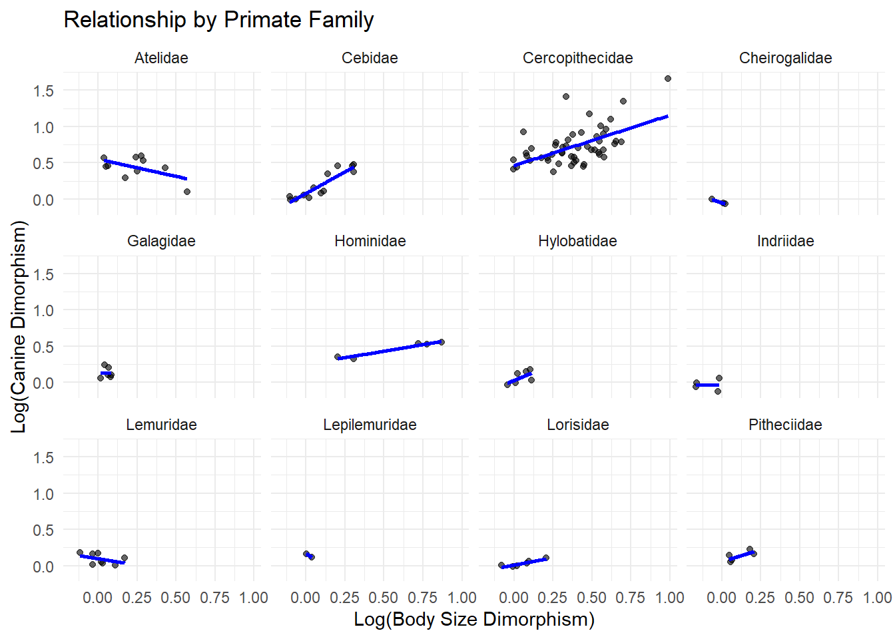
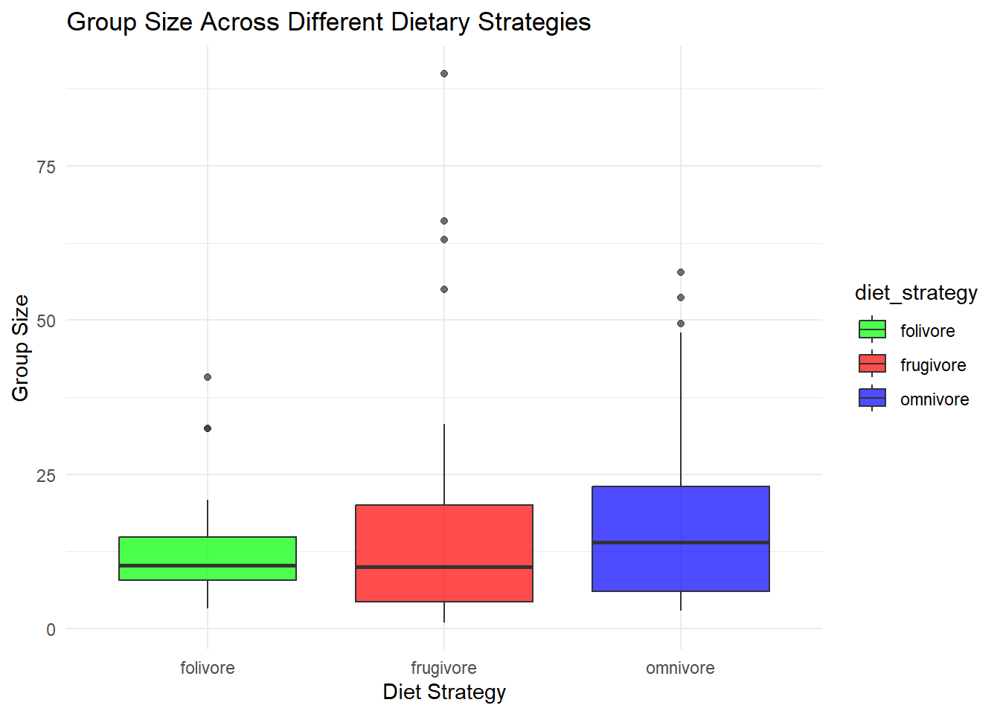

1 + 1[1] 2Quarto enables you to weave together content and executable code into a finished document. To learn more about Quarto see https://quarto.org.
When you click the Render button a document will be generated that includes both content and the output of embedded code. You can embed code like this:
1 + 1[1] 2You can add options to executable code like this
[1] 4The echo: false option disables the printing of code (only output is displayed).
library(tidyverse)── Attaching core tidyverse packages ──────────────────────── tidyverse 2.0.0 ──
✔ dplyr 1.1.4 ✔ readr 2.1.5
✔ forcats 1.0.0 ✔ stringr 1.5.1
✔ ggplot2 3.5.1 ✔ tibble 3.2.1
✔ lubridate 1.9.4 ✔ tidyr 1.3.1
✔ purrr 1.0.2
── Conflicts ────────────────────────────────────────── tidyverse_conflicts() ──
✖ dplyr::filter() masks stats::filter()
✖ dplyr::lag() masks stats::lag()
ℹ Use the conflicted package (<http://conflicted.r-lib.org/>) to force all conflicts to become errorslibrary(ggplot2)
library(dplyr)
d <- read_csv("C:/Users/britt/OneDrive/Documents/ADA/data-wrangling.csv")Rows: 213 Columns: 23
── Column specification ────────────────────────────────────────────────────────
Delimiter: ","
chr (6): Scientific_Name, Family, Genus, Species, Leaves, Fauna
dbl (17): Brain_Size_Species_Mean, Body_mass_male_mean, Body_mass_female_mea...
ℹ Use `spec()` to retrieve the full column specification for this data.
ℹ Specify the column types or set `show_col_types = FALSE` to quiet this message.d_clean <- d %>%
filter(!is.na(DayLength_km) & !is.na(Move)) %>%
mutate(
log_DayLength = log(DayLength_km + 1),
log_Move = log(Move + 1)
)
ggplot(d_clean, aes(x = log_Move, y = log_DayLength)) +
geom_point(alpha = 0.6) +
geom_smooth(method = "lm", formula = y ~ x, se = FALSE, color = "blue") +
labs(x = "Log(Time Spent Moving)", y = "Log(Day Range Length)",
title = "Relationship Between Time Spent Moving and Distance Traveled") +
theme_minimal()
ggplot(d_clean, aes(x = log_Move, y = log_DayLength)) +
geom_point(alpha = 0.6) +
geom_smooth(method = "lm", formula = y ~ x, se = FALSE, color = "blue") +
labs(x = "Log(Time Spent Moving)", y = "Log(Day Range Length)",
title = "Relationship by Primate Family") +
facet_wrap(~ Family) +
theme_minimal()
d_clean <- d %>%
filter(!is.na(DayLength_km) & !is.na(MeanGroupSize)) %>%
mutate(
log_DayLength = log(DayLength_km + 1),
log_GroupSize = log(MeanGroupSize + 1)
)
ggplot(d_clean, aes(x = log_GroupSize, y = log_DayLength)) +
geom_point(alpha = 0.6) +
geom_smooth(method = "lm", formula = y ~ x, se = FALSE, color = "blue") +
labs(x = "Log(Group Size)", y = "Log(Day Range Length)",
title = "Relationship Between Group Size and Distance Traveled") +
theme_minimal()
ggplot(d_clean, aes(x = log_GroupSize, y = log_DayLength)) +
geom_point(alpha = 0.6) +
geom_smooth(method = "lm", formula = y ~ x, se = FALSE, color = "blue") +
labs(x = "Log(Group Size)", y = "Log(Day Range Length)",
title = "Relationship by Primate Family") +
facet_wrap(~ Family) +
theme_minimal()
d <- d %>%
mutate(Body_Size_Dimorphism = Body_mass_male_mean / Body_mass_female_mean)
d_clean <- d %>%
filter(!is.na(Canine_Dimorphism) & !is.na(Body_Size_Dimorphism)) %>%
mutate(
log_CanineDimorphism = log(Canine_Dimorphism),
log_BodySizeDimorphism = log(Body_Size_Dimorphism)
)
ggplot(d_clean, aes(x = log_BodySizeDimorphism, y = log_CanineDimorphism)) +
geom_point(alpha = 0.6) +
geom_smooth(method = "lm", formula = y ~ x, se = FALSE, color = "blue") +
labs(x = "Log(Body Size Dimorphism)", y = "Log(Canine Dimorphism)",
title = "Relationship Between Body Size and Canine Dimorphism") +
theme_minimal()
ggplot(d_clean, aes(x = log_BodySizeDimorphism, y = log_CanineDimorphism)) +
geom_point(alpha = 0.6) +
geom_smooth(method = "lm", formula = y ~ x, se = FALSE, color = "blue") +
labs(x = "Log(Body Size Dimorphism)", y = "Log(Canine Dimorphism)",
title = "Relationship by Primate Family") +
facet_wrap(~ Family) +
theme_minimal()
d$Fruit <- as.numeric(d$Fruit)
d$Leaves <- as.numeric(d$Leaves)Warning: NAs introduced by coerciond <- d %>%
mutate(diet_strategy = case_when(
Fruit > 50 ~ "frugivore",
Leaves > 50 ~ "folivore",
!is.na(Fruit) & !is.na(Leaves) ~ "omnivore",
TRUE ~ NA_character_
))
d_clean <- d %>%
filter(!is.na(diet_strategy) & !is.na(MeanGroupSize))
ggplot(d_clean, aes(x = diet_strategy, y = MeanGroupSize, fill = diet_strategy)) +
geom_boxplot(alpha = 0.7) +
labs(x = "Diet Strategy", y = "Group Size",
title = "Group Size Across Different Dietary Strategies") +
theme_minimal() +
scale_fill_manual(values = c("frugivore" = "red", "folivore" = "green", "omnivore" = "blue"))
wilcox.test(MeanGroupSize ~ diet_strategy,
data = d_clean %>% filter(diet_strategy %in% c("frugivore", "folivore")),
exact = FALSE)
Wilcoxon rank sum test with continuity correction
data: MeanGroupSize by diet_strategy
W = 516.5, p-value = 0.7652
alternative hypothesis: true location shift is not equal to 0d |>
mutate(Binomial = paste(Genus, Species, sep = "_")) |>
select(Binomial, Family, Brain_Size_Species_Mean, Body_mass_male_mean) |>
group_by(Family) |>
summarise(across(c(Brain_Size_Species_Mean, Body_mass_male_mean), ~ mean(.x, na.rm = TRUE))) |>
arrange(Brain_Size_Species_Mean)# A tibble: 14 × 3
Family Brain_Size_Species_Mean Body_mass_male_mean
<chr> <dbl> <dbl>
1 Tarsiidae 3.26 131
2 Cheirogalidae 4.04 193.
3 Galagidae 5.96 395.
4 Lepilemuridae 7.27 792
5 Lorisidae 8.67 512.
6 Lemuridae 23.1 2077.
7 Cebidae 23.9 1012.
8 Indriidae 27.3 3638.
9 Daubentonidae 44.8 2620
10 Pitheciidae 56.3 1955.
11 Atelidae 80.6 7895.
12 Cercopithecidae 85.4 9543.
13 Hylobatidae 101. 6926.
14 Hominidae 410. 98681.